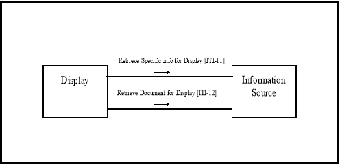
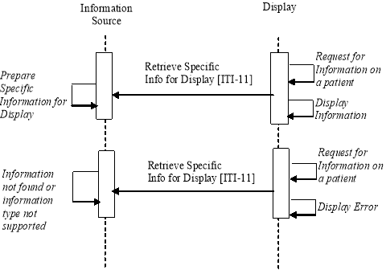
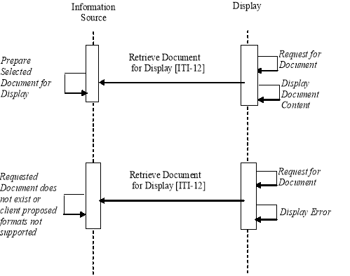

IHE IT Infrastructure (ITI)
Technical Framework
Revision 16.0 – Final Text
The Retrieve Information for Display Integration Profile (RID) provides simple and rapid read-only access to patient-centric clinical information that is located outside the user’s current application but is important for better patient care (for example, access to lab reports from radiology department). It supports access to existing persistent documents in well-known presentation formats such as CDA (Level 1), PDF, JPEG, etc. It also supports access to specific key patient-centric information such as allergies, current medications, summary of reports, etc. for presentation to a clinician. It complements workflows with access from within the users’ on-screen workspace or application to a broad range of information.
In this profile, the Information Source is solely responsible to turn the healthcare specific semantics into what this IHE Integration Profile calls a “presentation” format. As a consequence the Display may process and render this “presentation” format with only generic healthcare semantics knowledge. Different formats have specific characteristics in terms of (1) server imposed limitations and (2) flexibility of display on the client side to render within its display constraints (e.g., a generic CDA level 1 style sheet).
The Information Source is entirely responsible for the information returned for display and its clinical accuracy.
This profile offers the capability to leverage industry standards that address both the structure and content of documents that may be returned by information sources. Where this profile references HL7 Clinical Documentation Architecture (CDA), it limits itself to the approved CDA Level 1. Furthermore, it only uses a subset of CDA Level 1 that facilitates making information available for display.
Future extensions to the IHE IT Infrastructure TF will more fully leverage CDA Release 2 and other industry standards, and will incorporate vocabularies such as SNOMED and Clinical LOINC as well as clinical templates.
This profile does not provide specific requirements on the means of assuring access control or security of information in transit. Such measures shall be implemented through appropriate security-related integration profiles, such as Enterprise User Authentication (see ITI TF-1:4). ITI TF-1: Appendix E describes the process flows for usage of the Retrieve Information for Display Integration Profile in conjunction with the Enterprise User Authentication and Patient Identifier Cross-referencing Integration Profiles.
Figure 3.1-1 shows the actors directly involved in the Retrieve Information for Display Integration Profile and the relevant transactions between them. Other actors that may be indirectly involved due to their participation in User Authentication and Patient Identifier Cross-referencing are not shown.

Figure 3.1-1: Retrieve Information for Display Actor Diagram
Table 3.1-1 lists the transactions for each actor directly involved in the Retrieve Information for Display Integration Profile. In order to claim support of this Integration Profile, an implementation must perform the required transactions (labeled “R”). A complete list of options defined by this Integration Profile and that implementations may choose to support is listed in ITI TF-1: 3.2.
Table 3.1-1: Retrieve Information for Display Integration Profile - Actors and Transactions
|
Actors |
Transactions |
Optionality |
Section |
|
Display |
Retrieve Specific Info for Display [ITI-11] |
R |
|
|
Retrieve Document for Display [ITI-12] |
R |
||
|
Information Source |
Retrieve Specific Info for Display [ITI-11] |
R (see below) |
|
|
Retrieve Document for Display [ITI-12] |
R (see below) |
Transaction [ITI-11] is required if one of the following options is selected by the Information Source (see Section 3.2):
Transaction [ITI-12] is required if the Persistent Document Option is selected by the Information Source ( s ee Section 3.2).
The means for a Display to obtain documents’ unique identifiers in order to retrieve them via Transaction [ITI-11] may be either via t ransaction [ITI-12] or by other means that are outside the scope of the RID Integration Profile.
Options that may be selected for this Integration Profile are listed in the Table 3.2-1 along with the IHE actors to which they apply.
Table 3.2-1: Retrieve Information for Display - Actors and Options
|
Actor |
Options |
Vol. & Section |
|
Display |
None |
- - |
|
Information Source
|
Persistent Document |
|
|
Summary of All Reports ( N ote 2) |
||
|
Summary of Laboratory Reports ( N ote 2) |
||
|
Summary of Radiology Reports ( N ote 2) |
||
|
Summary of Cardiology Reports ( N ote 2) |
||
|
Summary of Surgery Reports ( N ote 2) |
||
|
Summary of Intensive Care Reports ( N ote 2) |
||
|
Summary of Emergency Reports ( Note 2) |
||
|
Summary of Discharge Reports ( Note 2) |
||
|
Summary of Prescriptions ( N ote 2) |
||
|
List of Allergies and Adverse Reactions |
||
|
List of Medications ( N ote 1) |
Note 1: List of Medications includes the list of medications currently known to be administered to the patient. It differs from the Summary of Prescriptions, in that the latter reflects what has been prescribed to the patient, but are not necessarily any longer administered.
Note 2: In all the above options, “summary of reports” means that a general patient context (patient name, etc.) is provided along with a list of entries, where an entry includes key attributes such as date, specialty, and additional information sufficient to allow the viewer to select an entry. An entry may reference a persistent document for RID or other application defined RID summaries. Beyond these general guidelines, the specific content may likely be influenced by the context of use and customer desires. Such summaries are non-persistent in that they are likely to be updated in the course of patient care.
This section describes the process and information flow when displayable patient information is retrieved from an information source. Three cases are distinguished.
Case 1 -Retrieve Specific Information for Display: The first case describes use cases when the Display and the person associated are requesting some information related to a patient . A somewhat specific request for information is issued (e.g., Retrieve a summary of laboratory reports) for a specific Patient ID to an Information Source. The patient ID is assumed to be unambiguous as fully qualified with the assigning authority. A number of additional filtering keys may be used (last N reports, date range, etc.) depending on the specific type of request issued. The Information Source responds with presentation-ready information that it considers relevant to the request. This i ntegration p rofile leaves entire flexibility to the Information Source to organize the content and presentation of the information returned. The Display simply displays the information to the person that triggered the request. The Information Source shall respond with an error message when it does not support the specific type of request or does not hold any records for the requested patient ID.

Figure 3.3-1: Case 1: Retrieve Specific Information for Display Process Flow
Case 2 - Retrieve a Document: The second case describes use cases when the Display and the person associated are requesting a uniquely identified document such as a report, an image, an ECG strip, etc. The Information Source responds to the request by using one of the proposed formats to provide the presentation-ready content of the object it manages. The detailed presentation and the clinical integrity of the content of the document are under the control of the Information Source Actor. The Display simply displays the presentation-ready document content to the person that triggered the request. The Information Source shall respond with an error message when the requested document is unknown or when none of the formats acceptable to the Display is suitable to present the requested document.
The main difference between the Retrieve Specific Information and the Retrieve Document transactions is that the latter applies to a uniquely identifiable persistent object (i.e., retrieving the same document instance at a different point in time will provide the same semantics for its presented content). For the Retrieve Specific Information transaction, this information is always related to a well-identified patient (Patient ID), but its content, although of a specific type (lab summary, or radiology summary, list of allergies) is generally dynamic (i.e., retrieving the same type of specific information at a different point in time is likely to result in different content; for example, a list of allergies may have been updated between two requests).
Note: This integration profile is not intended for highly dynamic information such as that used for patient monitoring.

Figure 3.3-2: Case 2: Retrieve a Document Process Flow
Case 3 - Retrieve Specific Information for Display and Retrieve several Documents Process Flow: The third case combines the two cases above with the capability to associate in sequence the Retrieve Specific Information and the Retrieve Document for Display transactions. This allows for links to persistent documents within the returned specific information or for having persistent documents reference other persistent documents. For example, the user requests a summary of recent discharge reports, and then selects a specific document referenced in that summary list. From the discharge report displayed to the user, the user selects a specific surgery report. This surgery report is retrieved and displayed.
Figure 3.3-3: Case 3: Retrieve Summary Information for Display and Retrieve several Documents Process Flow
The same Display may involve more than one Information Source by sequentially issuing different transactions. This Integration Profile assumes that the Display Actors may be configured a priori with one or more remote Information Source Actors along with the type of retrieve transactions/type of requests/specific keys suitable for the application context from which this Retrieve Information for Display requests are issued. Future Integration Profiles may facilitate such site-specific configuration tasks.